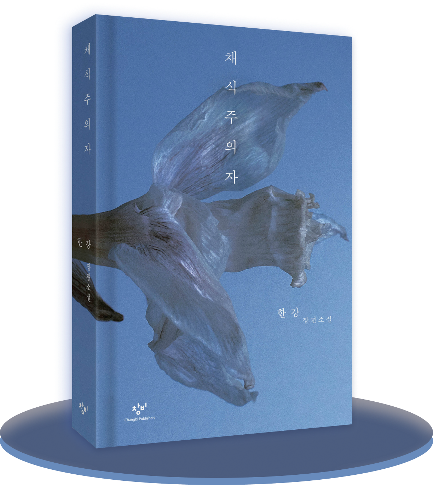
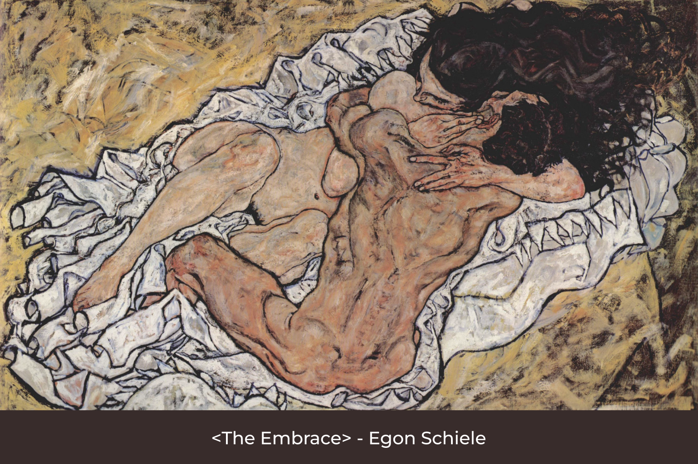
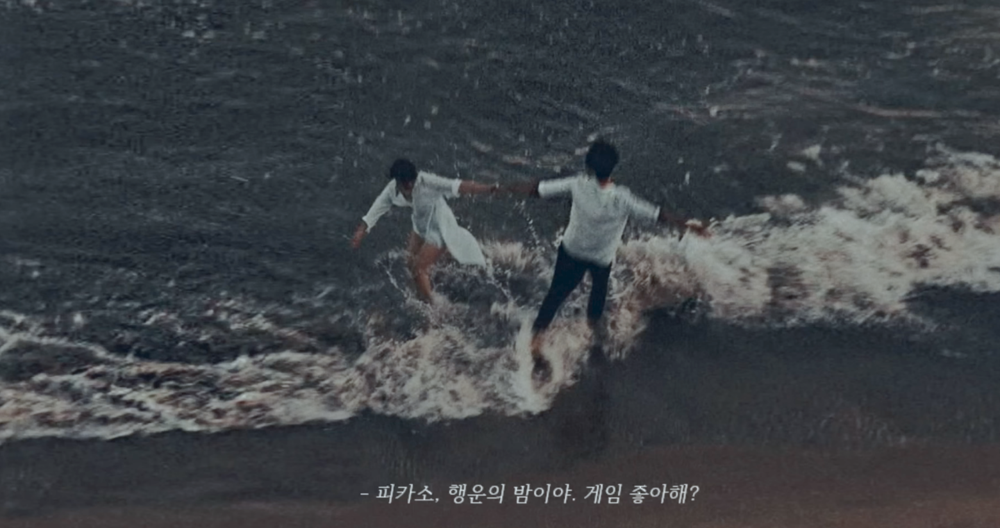

세상 누구보다 평범하고 눈에 띄지 않는 주인공 영혜는 어린 시절에
강아지에게 물리자 아버지가 그 강아지를 폭행하던 악몽을 꾸는 것을
시작으로 채식주의자가 되기로 결심한다.
냉장고에서 모든 동물성 식품들을 꺼내 죄다 버리고 다신 고기를 입에
대지도, 사지도 않았다. 이에 불만을 가진 남편이 가족 모임에서
이야기하자 영혜의 아버지는 사위에게 사과하며 영혜의 입에 억지로 고기를
욱여넣기 위해 가족들의 만류를 뿌리치고 폭력까지 행사한다. 결국 영혜는
그 자리에서 손목을 그었다.

채식주의자
- 출판사 : 창비

그 후로 영혜는 말이 더 없어졌다. 그런 영혜에게 몽고반점이 있다는 것을
안 형부는 본인의 영상 작품에 나체로 출연해 달라고 부탁한다. 형부의
작품들을 보던 영혜는 사람의 몸에 물감으로 꽃을 그리는 것에 매혹되어
촬영하던 중 형부와 교합을 하게 되고, 그 다음 날 언니 인혜가 그 광경을
목격하게 된다. 평소 영상 작업을 하며 새처럼 자유롭게 날고 싶어 하던
그는 경찰을 피해 베란다에서 새가 된 듯 날았다.
이 사건 이후 영혜는 정신병원에 입원하게 되고, 언니인 인혜가 영혜를 주기적으로 돌봤다. 영혜를 보러 갈 때마다 계속 말라가는 모습에 인혜는 마음이 아팠지만 도대체 왜 본인의 남편과 그랬는지 물어보고 싶기도 했다. 공허하던 그녀의 눈빛은 나무가 될 거라는 말을 할 땐 사그라들고 언제 그랬냐는듯 생기를 띄었다. 나무가 되기 위해 아예 먹기를 거부하던 영혜는 결국 큰병원으로 옮겨지며 이야기는 마무리 된다.
이 사건 이후 영혜는 정신병원에 입원하게 되고, 언니인 인혜가 영혜를 주기적으로 돌봤다. 영혜를 보러 갈 때마다 계속 말라가는 모습에 인혜는 마음이 아팠지만 도대체 왜 본인의 남편과 그랬는지 물어보고 싶기도 했다. 공허하던 그녀의 눈빛은 나무가 될 거라는 말을 할 땐 사그라들고 언제 그랬냐는듯 생기를 띄었다. 나무가 되기 위해 아예 먹기를 거부하던 영혜는 결국 큰병원으로 옮겨지며 이야기는 마무리 된다.

주인공인 영혜에 대한 이야기지만 글은 영혜의 시점으로 쓰여지지 않는다.
1부 [채식주의자]는 영혜의 남편이, 2부 [몽고반점]에선 영혜의 형부가,
3부 [나무 불꽃]에선 영혜의 언니가 서술한다. 이 넷의 공통점은 영혜가
폭력에 휘둘려왔다는 것을 알고 있었지만 그 누구도 가해자인 아버지를
탓하지 않았다는 점이다. 본인의 성장을 위해 더 이상 다른 생명의 희생을
요구하지 않겠다는 영혜의 비폭력주의를 폭력으로 꺾으려 한다. ‘아버지는
원래 그런 분이니까’, ‘저런 상황에선 아버지의 뜻에 거스르는게 아니라
언니인 인혜처럼 싹싹하고 애교있게 넘어가면 되는데 그렇질 않았으니
저렇게 된거지’ 등의 생각이 기저에 깔려있다. 죽어가면서까지 모두에게
무해한 나무가 되겠다는 영혜에게 언니는 이렇게 외친다.
이제 우리는 생각해볼 필요가 있다
폭력이 만연해 있는 우리 주위. 우리는 어떤 사람인가?
‘하지만 뭐야. 넌 죽어가고 있잖아. 그 침대에 누워서, 죽어가고 있을
뿐이잖아.’
이제 우리는 생각해볼 필요가 있다
폭력이 만연해 있는 우리 주위. 우리는 어떤 사람인가?
Editior
현빈

중반부부터 끝까지 몰아치는 이야기의 전개에 몰입을 도와주는
플레이리스트다.
생생히 묘사된 폭력으로 인한 거북함을 이해한다는 듯 잔잔하면서 그 분위기를 흐트리지 않아 책의 중반부터 함께 들어보시길 추천드린다.
생생히 묘사된 폭력으로 인한 거북함을 이해한다는 듯 잔잔하면서 그 분위기를 흐트리지 않아 책의 중반부터 함께 들어보시길 추천드린다.